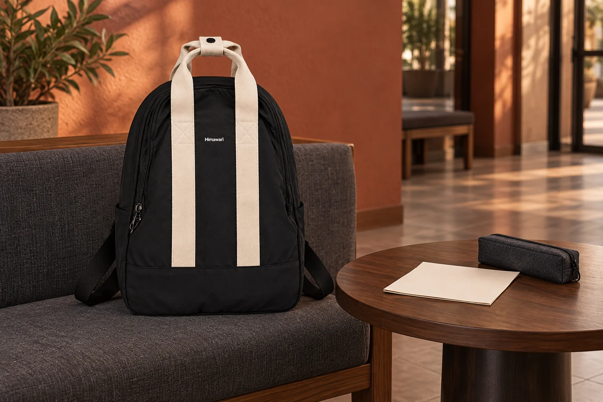
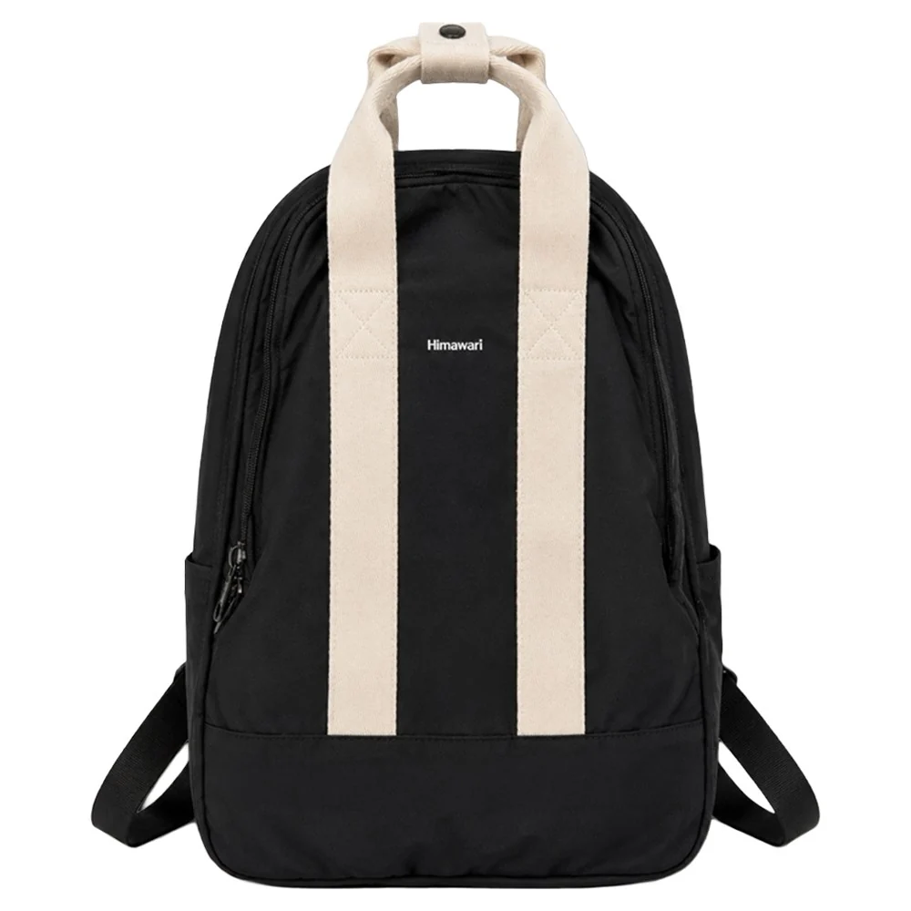

백팩 손잡이가 입구 앞에 놓일 때

백팩을 책상 옆에 내려놓고 지퍼를 열려는데 손잡이가 입구 앞으로 넘어옵니다. 한 손으로 손잡이를 들고 다른 손으로 물건을 꺼내면 가방을 받칠 손이 모자랄 수 있습니다. 손잡이가 있는 위치와 입구를 여는 순서를 함께 보면 이 작은 불편을 살펴볼 수 있습니다. 손에 들 때 보기 좋은 모습에 더해 내려놓고 사용할 때의 자리도 가방 선택에 포함해봅니다.
제품의 위쪽에서는 손잡이와 입구의 위치 관계를 봅니다. 손잡이가 입구를 사이에 두고 놓이는지, 여밈을 잡으려는 손이 어느 쪽으로 들어가는지 사진에서 보이는 만큼 읽습니다. 실제로 열리는 범위가 담긴 사진이 없다면 닫힌 모습에서 나머지 구조를 상상해 채우지 않습니다. 물건을 꺼낼 동작에 필요한 자료를 따로 찾는 편이 정확합니다.
손에 들 때 모이는 부분
손잡이를 쥐면 위쪽의 부드러운 부분이 함께 모일 수 있습니다. 가방을 손에 든 채 열려고 한다면 본체를 받치는 방법부터 생각합니다. 제품이 허용한 운반 부위를 사용하더라도 공중에 든 가방의 입구를 크게 벌리는 일이 늘 편한 것은 아닙니다. 물건을 찾기 전에 가방을 내려놓는 순서를 고르면 손잡이를 붙잡고 버틸 필요가 줄어듭니다.
두 손잡이를 함께 쓰는 제품이라면 하나만 잡았을 때의 모양으로 정상 사용을 판단하지 않습니다. 실제 안내된 운반 방식을 읽습니다. 손잡이 사이의 연결 부품이 보이더라도 어떤 목적으로 마련된 것인지는 제품 설명에서 확인합니다. 사진의 작은 고정 부위를 보고 잠금장치나 보강 구조라고 부르는 대신 보이는 위치와 열고 닫을 때의 관계부터 살펴봅니다.
Himawari No.2505 제품 정보의 검정 원본 사진에는 밝은 색의 손잡이와 앞면을 따라 내려오는 띠가 보입니다. 몸체와 색이 달라 어느 부분이 위로 이어지는지 눈으로 찾기 쉽습니다. 이 사진은 닫힌 정면의 자료입니다. 손잡이를 한쪽으로 놓았을 때 입구가 어떻게 열리는지까지 보여 주지는 않으므로 그런 동작이 궁금하다면 열어둔 사진이나 실제 제품을 봐야 합니다.

내려놓으면 손잡이가 향할 쪽
가방을 둘 면을 정한 뒤 손잡이를 어디에 놓을지 봅니다. 손잡이를 안쪽으로 무조건 밀어 넣기보다 열린 여밈이나 내용물과 겹치는지 살펴봅니다. 손잡이 끝이 지퍼의 이동 길에 들어가면 닫는 동작을 멈추고 정리합니다. 지퍼로 밀어내며 위치를 바꾸지 않고 손으로 겹친 부분을 치운 다음 여밈을 움직이면 걸린 곳을 알아보기 쉽습니다.
책상 위 공간이 좁으면 가방을 세워놓은 채 자료를 꺼내고 싶어질 수 있습니다. 이때 손잡이가 옆으로 펼쳐질 자리까지 있는지 봅니다. 옆 사람의 노트나 음료에 손잡이가 닿는다면 본체만 놓일 공간을 찾았다고 준비가 끝난 것은 아닙니다. 가방을 열고 손을 넣을 범위를 포함해 자리의 넓이를 판단합니다. 필요한 때만 다른 허용된 면으로 옮기는 방법도 있습니다.
바닥에 내려놓는 상황에서는 손잡이가 바닥으로 늘어지는지 살펴봅니다. 어깨끈과 겹쳐 어느 것을 잡아야 할지 헷갈린다면 다시 들 위치를 눈으로 확인할 수 있게 정리합니다. 잠깐 내려놓았을 때의 위치가 밤새 보관하기에 맞는지도 별도로 판단합니다. 사용 안내가 없는 상태에서 손잡이에 오래 매달아두는 방식까지 편리한 보관으로 넓히지 않습니다.
가방을 여는 손과 물건을 받는 손
꺼낼 물건이 작은 파우치 하나라면 가방을 받친 뒤 한 손으로 잡아낼 수 있는지 봅니다. 파일처럼 넓은 물건은 두 손으로 잡아 꺼낼 자리가 필요할 수 있습니다. 손잡이를 계속 들고 있어야만 입구가 유지되는지, 잠시 놓아도 물건을 다룰 수 있는지는 실제 구조에서 확인할 조건입니다. 모든 백팩에 같은 동작을 정해두지 않습니다.
No.2505의 안내된 외부 크기는 가로 30 × 세로 43 × 폭 14cm입니다. 책상이나 선반에서 본체가 차지할 규모를 비교할 자료로 쓸 수 있습니다. 손잡이가 펼쳐진 범위와 지퍼를 연 상태의 크기는 이 숫자와 별개입니다. 자주 사용하는 파일을 꺼내고 싶다면 파일의 외형뿐 아니라 잡을 손이 들어갈 공간도 제품의 입구 정보와 함께 문의할 수 있습니다.
손에 휴대전화가 있는 상태에서 가방을 열 계획이라면 그 물건을 둘 위치도 생각합니다. 휴대전화를 열린 가방 위에 임시로 걸치면 손잡이를 움직이는 순간 같이 미끄러질 수 있습니다. 한 동작을 마친 뒤 다음 물건을 다루는 순서를 고릅니다. 가방을 여는 손을 더 빠르게 움직이는 것보다 손에 남겨둘 물건을 줄이는 편이 간단한 상황도 있습니다.
다시 닫기 전에 입구를 한 번 비우기
자료를 되담은 뒤에는 물건의 모서리와 손잡이가 여밈 밖에 남았는지 봅니다. 밖으로 나온 손잡이를 가방 안으로 함께 눌러 넣어 닫는 대신 원래 위치로 정리합니다. 입구가 잘 보이는 상태에서 지퍼를 움직이면 무엇이 걸렸을 때도 멈추기 쉽습니다. 지퍼가 갑자기 당겨지지 않으면 먼저 열린 상태로 되돌려 접힌 원단과 손잡이를 살핍니다.
평소 가방에서 손잡이를 계속 옮겨야 했다면 후보를 고를 때 그 동작을 먼저 비교해봅니다. 들고 이동하는 길이는 괜찮아도 내려놓고 여는 방식이 번거로울 수 있습니다. 사진을 볼 때 필요한 질문을 손잡이가 예쁜지에서 열 때 어디에 놓이는지까지 넓힐 수 있습니다. 실물을 볼 기회에는 평소 꺼내는 물건 하나로 열고 닫는 순서를 이어보세요.
새로 고른 가방의 손잡이가 익숙해졌다면 위치를 고정할 장식을 더할 필요부터 다시 생각합니다. 별도 끈이나 집게로 묶으면 여밈의 움직임이 달라질 수 있습니다. 제품의 원래 사용법으로 충분히 정리되는지 먼저 봅니다. 매번 같은 자리에 내려놓는 사람은 가방을 향하게 둘 방향을 바꾸는 것만으로 손잡이와 입구가 겹치는 순간이 달라지는지 살펴볼 수 있습니다.